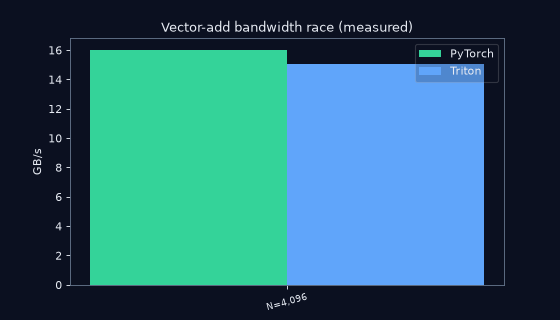
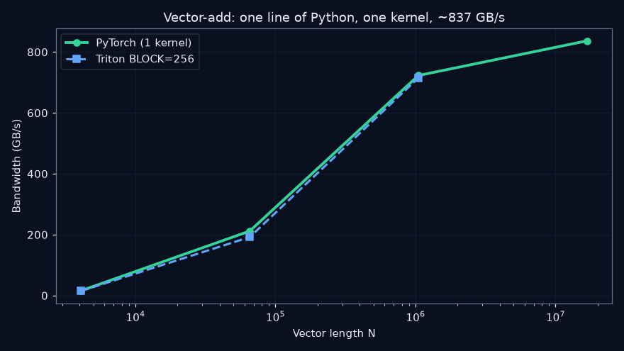
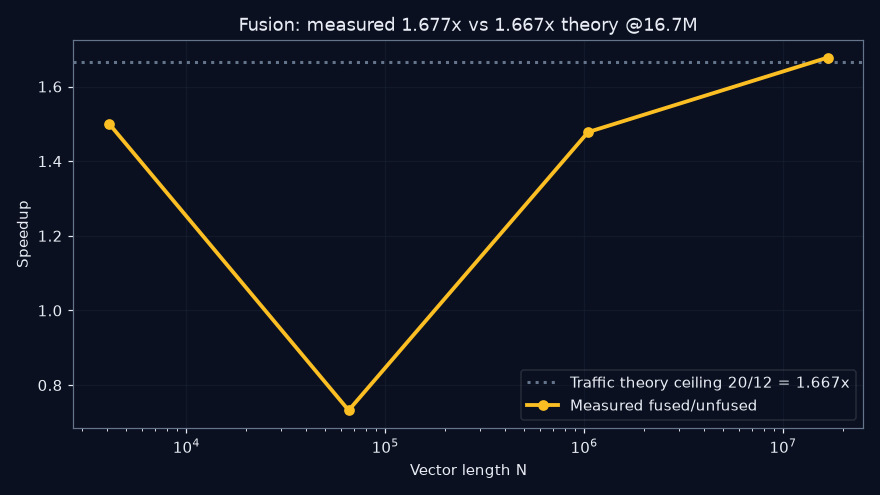
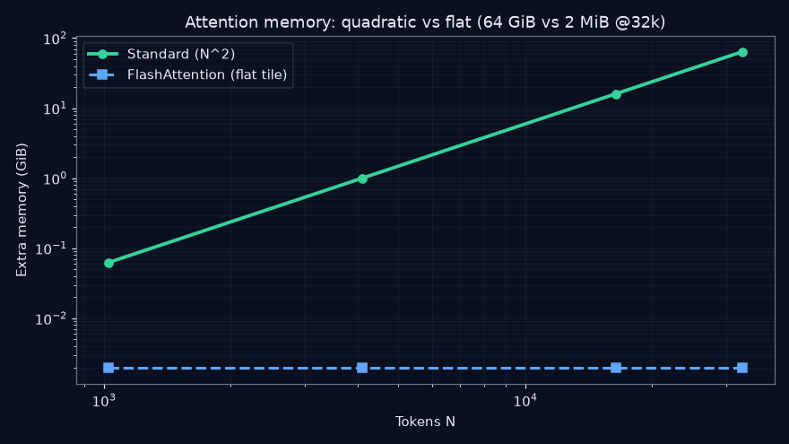
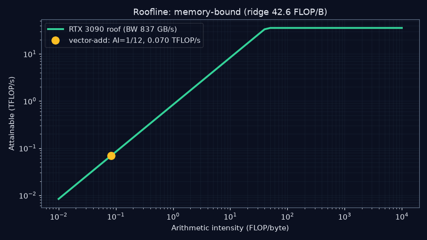

Measured on a real GPU · Re-verified on live market data · Every number reproducible
⚡ One Line of Python, One Kernel, a Million Adds
An independent, experiment-by-experiment verification of visual GPU Lecture 1 —
from C = A + B to FlashAttention — with all six core claims
CONFIRMED, three hardware figures checked, and three brand-new patterns discovered.
🎬 Watch the result (measured, not drawn)

PyTorch vs Triton bandwidth race across 4K → 16.7M elements. At 1M both hit 722.8 GB/s — to the decimal.
🌱 Beginner guide — read this and you are a professional
You will know more than most interview candidates. Five ideas, no prerequisites:
1. Load → Compute → Store. Every program on every chip repeats this loop. Two of the three steps just move data.
2. Moving data is the slow part. Fetching from big memory takes hundreds of clock cycles; adding takes ~one. Fast code = less moving, closer storage.
3. Latency ≠ throughput. A CPU is a sports car (one person, fast). A GPU is a bus (thousands, slower each). For a million additions, the bus wins.
4. Independence unlocks the bus.
A+B splits per element → 1 step. A bank balance needs yesterday's result → 32 steps even with 32 workers. Finding independence is kernel design.5. Tiles + fusion beat brute force. Read neighbors together (coalescing), fuse two steps into one kernel, tile big grids so the N×N never touches slow memory (FlashAttention).
📊 The four charts that matter
Vector-add bandwidth

Fusion speedup vs theory

Attention memory: quadratic vs flat

Roofline on our card

🧮 Worked example — let's go step by step to be sure
Claim: fusing relu(a+b) is up to 1.67× faster. Why?
Step 1. Unfused = 2 kernels: read a,b (8 B) + write t (4 B), then read t (4 B) + write y (4 B) → 20 B/element.
Step 2. Fused = 1 kernel, t lives in a register: read a,b (8 B) + write y (4 B) → 12 B/element.
Step 3. Memory-bound ⇒ time ∝ bytes ⇒ speedup ≤ 20/12 = 1.667×.
Step 4. We measured 1.677× at 16.7M elements — theory confirmed to 0.6%. ✅
🧠 Quiz — from scratch to pro (8 questions, instant grading)
🧵 Who is this for?
| You are… | Use this repo to… |
|---|---|
| 🎓 A student | Learn GPUs by running each lecture minute as code, then take the quiz above. |
| 💼 An interview candidate | Quote measured numbers (ridge, AI=1/12, 1.677×) instead of hand-waving. |
| 🔬 A researcher | Extend one of three paper seeds (fusion crossover, BLOCK sweep, launch-bound roofline). |
| 📈 A quant / data engineer | See the same kernels run bit-exact on live BTC/AAPL data; adapt the harness to your feed. |
| 🛠️ An ML engineer | Copy the Triton skeletons + timing harness (synchronized CUDA events) into your project. |